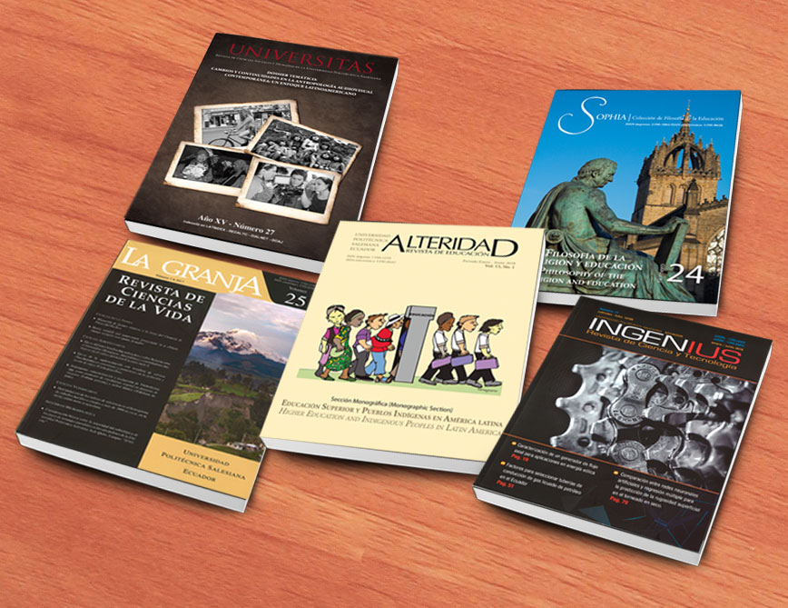
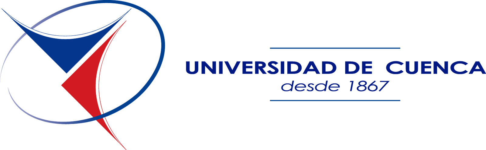
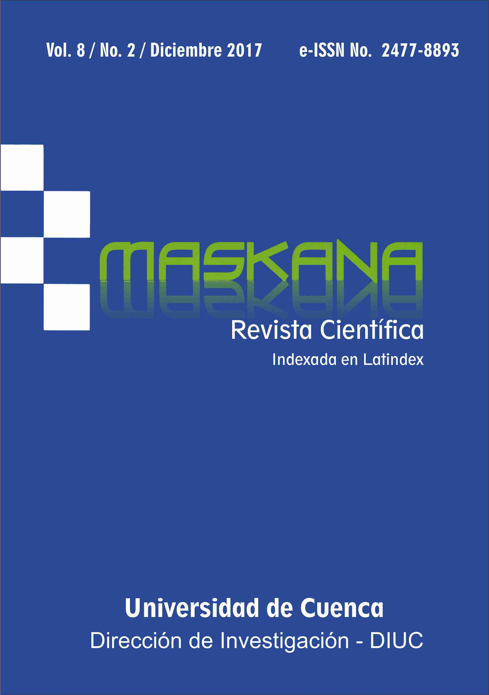
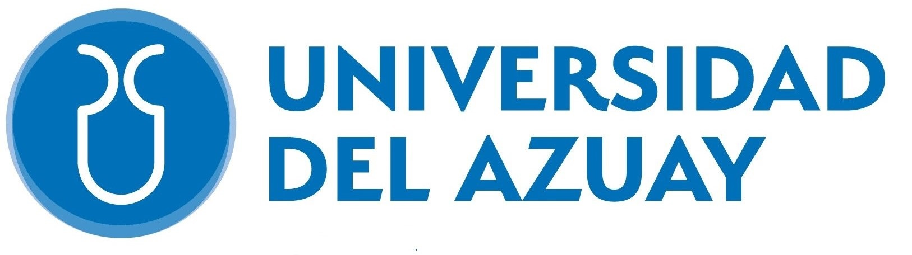
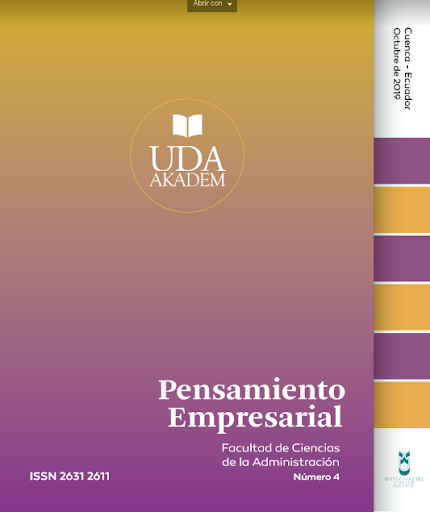
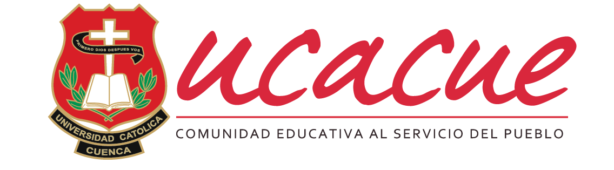

Misión: La Universidad Politécnica Salesiana es una institución de educación superior humanística y politécnica,
de inspiración cristiana con carácter católico e índole salesiana; dirigida de manera preferencial a jóvenes
de los sectores populares; busca formar "honrados ciudadanos y buenos cristianos", con excelencia humana y académica,
con capacidad investigativa e innovadora, que contribuyan al desarrollo sostenible local y nacional.
Visión: Al 2023, la UPS es una institución de educación superior de referencia en la búsqueda de la verdad
y el desarrollo de la cultura, de la investigación científica y tecnológica; reconocida socialmente por su calidad en la
academia y producción científica, por su responsabilidad social universitaria y por su capacidad de incidencia en la innovación,
interculturalidad y el desarrollo. Razón de Ser, Página oficial de la institución.
Revistas Académicas

La Universidad Politécnica Salesiana con el objetivo de comunicar y demostrar
el aprendizaje que se obtiene dentro y fuera de las aulas ha publicado una gran
variedad de revistas científicas que se enfocan en una determinada área.
La UPS se ha caracterizado por brindar educación de calidad en diferentes campos que en la
actualidad son necesarios para el correcto desarrollo del país, desde ingenierías hasta
licenciaturas los graduados de la UPS están listos para afrontar los problemas del mundo moderno.
Carreras de Grado
Área / Campo
Carreras (Más relevantes)
Administración y Economía
Administración de Empresas, Contabilidad y Auditoría, Economía
Agropecuaria, Biotecnología, Gestión de Riesgos y Desastres, Ambiental, Medicina Veterinaria
Ciencias Sociales
Comunicación, Psicología
Educación
Educación Básica, Educación Inicial, Pedagogía de la Actividad Física y Deporte
La Universidad Politécnica Salesiana cuenta con una gran variedad de Carreras universitarias, todas enfocadas
en analizar y resolver problemáticas actuales. Para más información,
haz click aquí.
Redes Sociales
Para una información más detallada de admisiones, noticias,
y más contáctate con las redes oficiales.
Página Oficial: www.ups.edu.ec
Facebook
Twitter
Instagram
YouTube
Universidad Estatal de Cuenca (UCUENCA)
Misión y Visión

Misión: La Universidad de Cuenca es una universidad pública, cuya misión es formar profesionales y científicos
comprometidos con el mejoramiento de la calidad de vida, en el contexto de la interculturalidad y en armonía con la naturaleza.
La Universidad fundamenta en la calidad académica, en la creatividad y en la innovación, su capacidad para responder a los retos
científicos y humanos de la época y sociedad regional, nacional e internacional equitativa, solidaria y eficiente.
Visión: La Universidad de Cuenca se proyecta como una institución con reconocimiento nacional e internacional
por su excelencia en docencia con investigación y vinculación con la sociedad; comprometida con los planes de desarrollo regional
y nacional; que impulsa y lidera un modelo de pensamiento crítico en la sociedad. Nosotros, Universidad de Cuenca.
Revistas Académicas

Con el objetivo de brindar tanto a estudiantes, docentes e investigadores en general la U de Cuenca
ha generado plataformar de divulgación para que así se pueda comunicar y difundir acerca de los
avances y descubrimientos actuales.
Maskana: Revista científica.
Pucara: Publicación anual de la Facultad de Filosofía, Letras y Ciencias de la Eduación.
Tsantsa: Publicación electrónica de la Facultad de Artes.
IURIS: Centrada en temas de Jurisprudencia y Ciencias Políticas y Sociales.
Acordes: Centrada en temas de Ciencias Económicas y Administrativas.
Para conocer más acerca de estas y otras publicaciones
hacer click aquí.
Oferta Académica
La U de Cuenca desde su fundación en 15 de octubre de 1867 fue creciendo constantemente
integrando de sus inicio más facultades y carreras modernizándose para solventar las necesidades
de la era moderna. Actualmente es una de las más prestigiosas Universidades de Ecuador y Latinoamérica.
Cuenta con más de 10 Facultades Académicas y más de 40 Carreras profesionales.
Educación Básica, Educación Inicial, Cine, Artes Visuales
La Universidad de Cuenca ofrece una amplia variedad de carreras profesionales a través de sus numerosas
facultades. Para mayor información acerca de sus ofertas
haz click aquí.
Redes Sociales
Para una información más detallada de admisiones, noticias,
y más contáctate con las redes oficiales de la Universidad de Cuenca.
Página Oficial: www.ucuenca.edu.ec
Facebook
Twitter
Instagram
YouTube
Universidad del Azuay (UDA)
Misión y Visión

Misión: Somos una Comunidad Universitaria que formamos personas con pensamiento crítico,
comprometida éticamente con la sociedad, que aporta a la ciencia y al conocimiento para lograr el desarrollo
integral de nuestro entorno.
Visión: Ser una Universidad orientada hacia la investigación; acreditada con estándares nacionales
e internacionales; y, constituirse en un referente académico nacional.
Política de seguridad, salud y ambiente. Siendo fieles a nuestros principios y valores en la Universidad del Azuay nos comprometemos a:
Proteger la salud y seguridad de todos quienes hacemos la "Comunidad Universitaria" promoviendo y desarrollando
condiciones adecuadas de trabajo y un ambiente sustentable.
Hacer parte de nuestra vida el aprendizaje y la mejora continua como contribución para crear y desarrollar una cultura
de prevención y autocuidado.
Cumplir con las regulaciones legales de S&SO, aplicables a nuestras acciones institucionales.
Asignar los recursos necesarios para desarrollar un sistema de prevención de riesgos de seguridad y salud ocupacional.
Promover la participación y cumplimiento de las directrices de seguridad industrial y salud ocupacional en todos sus
colaboradores, contratistas, visitantes y demás personal relacionado con la ejecución de sus procesos.
Divulgar la presente Política a toda la Comunidad Universitaria.
Es compromiso activo y permanente de todos los colaboradores de la Universidad, contratistas y partes interesadas,
el dar cumplimiento a esta Política. Visión, Misión y principios; Universidad del Azuay.
Revistas Académicas

Con el objetivo de brindar tanto a estudiantes, docentes e investigadores en general la U del Azuay
ha generado plataformar de divulgación para que así se pueda comunicar y difundir acerca de los
avances y descubrimientos actuales.
Universidad y Verdad: Se centra en tratar de hacer un análisis de los temás actuales haciendo una reflexión de los mismos.
DAYA: Difunde contribuciones teóricas y técnicas del mundo del diseño en general.
Obra Digital: En contribución con Universidades españolas, es una revista que se centra en la Comunicación y temas afines.
UDAAKADEM: Difunde conocimiento económico y empresarial.
YU YARI KUNA: Publica memorias de congresos realizados por la UDA.
La Universidad del Azuay en su afán de educar a jóvenes que busquen superarse así mismo para cambiar al mundo,
ha desarrollado a lo largo de este tiempo varias Carreras Profesionales. Todas estas están enfocadas a integrar
conocimientos técnicos con formación humana, por ello cada oferta académica que brinda esta institución asegura
una formación de calidad que lleve a los estudiantes a ser autocríticos y con conocimientos de la cultura a través
del aprendizaje de otro idioma.
Carreras de Grado
Facultad
Carreras (Más relevantes)
Medicina
Medicina
Filosofía, Letras y Ciencias de la Educación
Comunicación, Psicología, Turismo, Educación
Diseño, Arquitectura y Arte
Arquitectura, Diseño Gráfico, Diseño de Interiores, Creación Teatral
Ciencias Jurídicas
Derecho, Estudios Internacionales
Ciencia y Tecnología
Biología, Ing. en Alimentos, Ing. en Minas, Ing. Producción
Ciencias de la Administración
Economía, Marketing, Contabilidad y Auditoria
Si quieres saber más detalles de estas y otras Carreras que la Universidad del Azuay tiene para ti,
haz click aquí.
Redes Sociales
Para una información más detallada de admisiones, noticias,
y más contáctate con las redes oficiales de la Universidad del Azuay.
Página Oficial: www.uazuay.edu.ec
Facebook
Twitter
Instagram
YouTube
Universidad Católica de Cuenca (UCACUE)
Misión y Visión

Misión: Desarrollar el pensamiento crítico, articulando los ejes sustantivos en que fundamenta
su actuar la universidad, para generar profesionales con competencias y contribuir a las soluciones de los problemas
de la sociedad.
La Universidad Católica de Cuenca en su afán de compartir el conocimiento,
pone a la disposición de toda la comunidad científica y a estudiantes una
colección de revistas tanto electrónicas como en impresión física que abarca
áreas fundamentales de la actualidad, las revistas Killkana.
Social: Se centra en tratar temas que giran en torno a las Ciencias Sociales, Administrativas y Económicas.
Salud y Bienestar: Se centran en investigaciones y avances en el campo de la salud, bienestar y afines.
Técnica: Se centra principalmente en temas de ingeniería y ciencias básicas.
Proceedings: Reúne resúmenes de conferencias y memorias de congresos.
Si estás interesado en saber más sobre esta colección,
haz click aquí.
Oferta Académica
Debido a los cambios actuales, y a la continua transformación de los sectores económicos, tecnológicos
y educativos la Universidad Católica de Cuenca se adapta ofertando Carreras Profesionales que vayan
junto con la evolución de esta sociedad.
Carreras de Grado
Unidad Académica
Carreras (Más relevantes)
Salud y Bienestar
Medicina, Odontología, Enfermería, Biofarmacia
Industria y Construcción
Ing. Civil, Ing. Industrial, Ing. Ambiental, Arquitectura
Administración
Administración de Empresas, Contabilidad y Auditoría
Ciencias Sociales, Periodismo, Información y Derecho
Derecho, Economía, Periodismo, Trabajo Social
Tecnologías de la Información y Comunicación
Software, Sistemas de Información, Tecnología de la Información
Educación
Educación, Diseño de Interiores, Pedagogía de la Actividad Física
Agricultura, Silvicultura, Pesca y Veterinaria
Medicina Veterinaria, Agronomía
Anímate a seguir una Carrera del futuro junto a la UCatoCue, si deseas más información,
haga click aquí.
Redes Sociales
Para estar al día con las novedades de la Universidad Católica de Cuenca, asegúrate de seguir los medios oficiales.
Página Oficial: www.ucacue.edu.ec